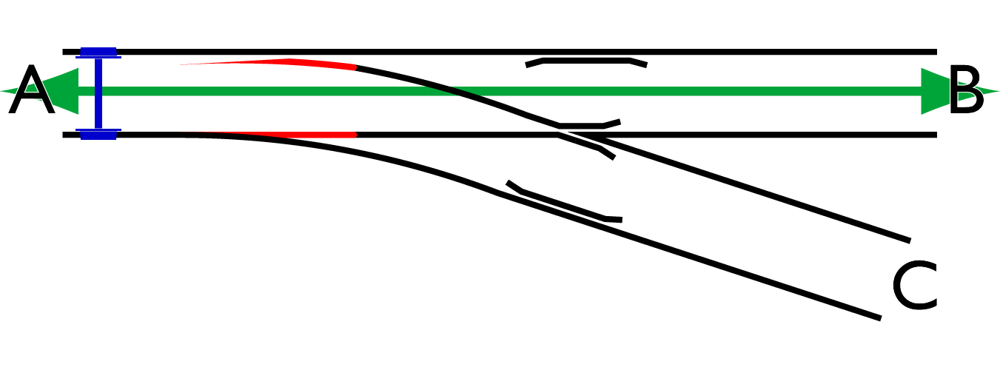
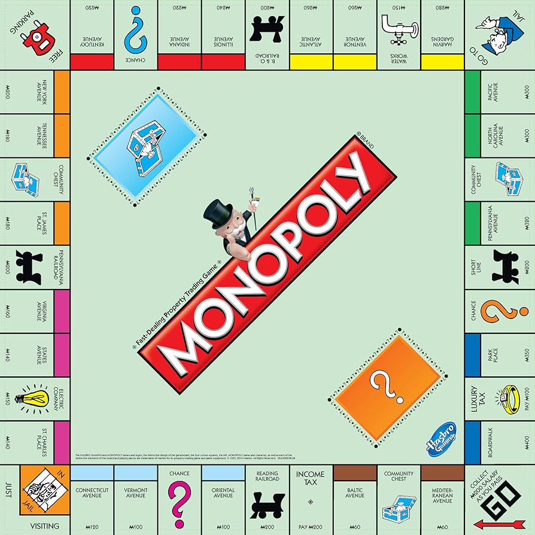
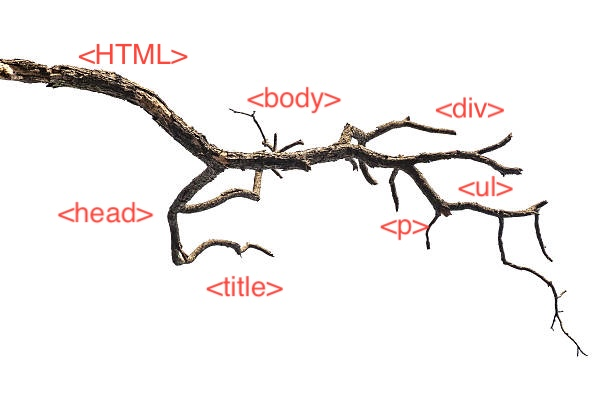

Javascript & DOM
15/09/25
Javascripts Relationship to HTML and CSS
- HMTL is for content e.g text, sturucture and media.
- CSS is for styling, colours fonts borders sizes spacing. It's the look and feel (theme/design) of a website.
- Javascript is for the behaviour of a website, reacts to users
- They all together allow the coder of the website to make it dynamic.
Loops and Control Flow
- The flow of execution in Javascript is line by line but we can change the flow with things like if, else if statments and for loops.
- If, else statments are like railroad switches, if something doesnt meet the condition of the if statment it falls back to the else part.

if (meets condition) {
does this
} else {
does this
}

Loops are like a game of Monopoly. You throw the dice and go from square to square until you reach back where you started and then go again.

DOM
- The DOM is structured like a tree where each branches only has one parent.

- The DOM starts searching at the top of the tree and finds which element you are calling by id or class and looks through branchs to find it
Arrays & Objects
- Arrays are accessed by numerical values
// Arrays are numbered like this:
// [0] [1] [2]
let arrayName = {"first. second, third"}
Objects are accessed by keys and property names
// Objects can have one value per name
or have multiple values as shown
let person = {
firstName: John,
lastName: Doe,
dateOfBirth: {
year: 1998,
month: 7
}
}
// The way to call an object is:
conesole.log(person.firstName)
Functions
- Functions allows you to break up your code into smaller chunks, they are also used for sections of code which need to be run multiple times because you can just call them. Functions help the readability organasation of your code.